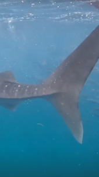
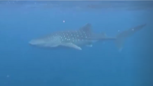

Les Philippines
Aux Philippines, j’ai d’abord séjourné à Cebu, où j’ai vécu des expériences fortes : nage en masque et tuba avec des requins-baleines, canyoning, tyroliennes.
J’ai ensuite rejoint Palawan, une île plus sauvage, marquée par la nature : étoiles de mer et crabes visibles à marée basse, plages préservées, ambiance paisible.
Ce pays m’a confrontée à un contraste saisissant : un coût de la vie parfois élevé, une grande pauvreté, et énormément de chiens errants.
 |
 |